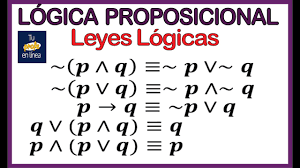

LOGICA PROPOSICIONAL
El silogismo es un razonamiento deductivo, por el momento ya hemos estudiado cómo validarlo y reconocerlo, los métodos de validación ya estudiados como los modos y figura, teoremas y reglas especiales del silogismo, diagramas de Venn, nos fueron útiles para comprobar validez, ahora estudiaremos una cuarta forma de comprobar validez lógica, utilizaremos tablas de verdad.
Los métodos para validar silogismos se han reducido a silogismos como tal, dos premisas y conclusión, pero qué sucedería si un silogismo tiene más de dos premisas, digamos 3 o 4, o más premisas y su conclusión, claramente ya no le llamamos silogismo, se convierte en argumento.
Retomando la idea, tener más de 2 premisas es tener un argumento, y los métodos antes vistos no serían suficientes para validarlos, el análisis se complica; el método de las tablas de verdad es útil en estos casos, teniendo un argumento formalizado y con la ayuda de los operadores lógicos, es posible determinar validez. La validez la obtendremos al encontrar una TAUTOLOGÍA.
Hemos de indicar que una proposición no esta completa si no es una formula bien formada (fbf). Que una proposición sea bien formada, implica tener todas las variables conectadas adecuadamente por sus operadores lógicos, sin estos operadores hace falta algo y la proposición no podrá ser tomada para encontrar validez lógica con tabla de verdad.
|
|
|
|---|---|
|  |